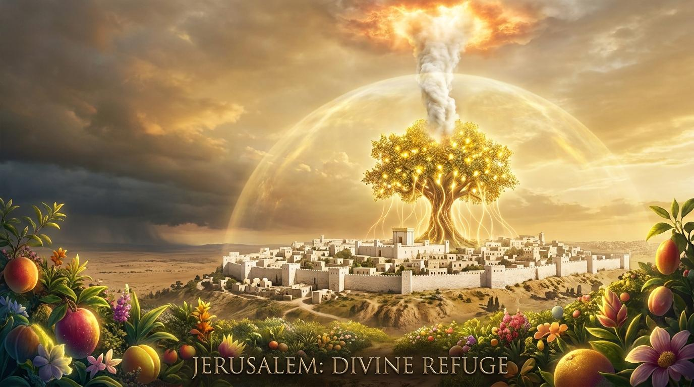

01
狂妄的虛華：當華麗成為屬靈的遮羞布
關鍵原文：גָּבַהּ (gabah)
意為「高舉、自視甚高」
引用經文
耶和華又說：因為錫安的女子狂傲...主必除掉她們華美的腳釧、髮網、月牙圈...必有臭爛代替馨香，繩子代替腰帶...
關鍵問題
上帝審判的焦點是「驕傲」與「不公義」。外在華麗若成為掩蓋靈性貧乏的遮羞布，即是偶像崇拜。
名言佳句
「當任何事物比上帝對你更重要時，它就是偶像。」——提摩太·凱勒

「到那日，耶和華發生的苗必華美尊榮，地上的出產必為以色列逃脫的人顯為榮華茂盛。」
—— 以賽亞書 4:2
聖潔公義的主，我們來到祢面前，承認我們常被這世界的虛浮華美所吸引，以致於心中的驕傲遮蔽了屬靈的雙眼。求祢的聖靈如同焚燒的靈，洗淨我們生命中的污穢，除去我們對物質與虛榮的依賴。願祢那華美尊榮的真理之苗在我們心中生長，使我們在繁華落盡之時，能單單看見祢的榮耀，並安息在祢神聖的護庇之中。奉主耶穌基督的聖名祈求，阿們。
猶大國經歷了空前的經濟繁榮，但背後隱藏著亞述帝國崛起的危機。領袖與百姓沉浸在幻象中，失去了對耶和華的倚靠。
嚴重的貧富差距，精英階層壓榨窮人。錫安女子揮霍奢華，反映了整個國家的道德淪喪與屬靈盲目。
信仰形式化，將物質豐盛視為神祝福的唯一指標，卻忽略了公義、憐憫與聖潔的核心要求。
關鍵原文：גָּבַהּ (gabah)
意為「高舉、自視甚高」
耶和華又說：因為錫安的女子狂傲...主必除掉她們華美的腳釧、髮網、月牙圈...必有臭爛代替馨香，繩子代替腰帶...
上帝審判的焦點是「驕傲」與「不公義」。外在華麗若成為掩蓋靈性貧乏的遮羞布，即是偶像崇拜。
「當任何事物比上帝對你更重要時，它就是偶像。」——提摩太·凱勒
關鍵原文：נָקָה (naqah)
意為「被清空、被剝奪」
你的男丁必倒在刀下；你的勇士必死在陣上。錫安的城門必悲傷、哀號；她必荒涼坐在地上...
失去神的同在，再多物質也無法填補內心荒涼。當銀行帳戶歸零，生命意義若也歸零，即是悲劇。
「上帝在我們心中擁有的空間，取決於我們願意清空多少世界。」——陶恕
關鍵原文：צֶמַח (tsemach)
指「苗、芽」，象徵彌賽亞
到那日，耶和華發生的苗必華美尊榮...主以公義的靈和焚燒的靈，將錫安女子的污穢洗去...
審判並非毀滅，而是洗淨。上帝要燒盡虛浮，讓基督那真正的華美彰顯，成為我們永恆的遮蔽。
「我已學會親吻那將我擊倒的波浪，因為它將我拋在萬古磐石之上。」——司布真
弟兄姊妹，我們生活在一個極度重視「包裝」的時代。打開社交媒體，我們看見的是修飾過的照片、名牌的服飾、奢華的假期。我們往往以為，這就是「榮耀」。然而，當繁華落盡，我們生命的本質究竟剩下什麼？
神在經文裡列出了一長串飾品。難道上帝反對人穿得漂亮嗎？絕對不是！上帝真正在意的是「狂傲」。當時錫安女子身上的每一件名牌，都沾滿了不公義的代價。她們用外在的奢華來掩飾內在的腐敗。
「當任何事物比上帝對你更重要時，它就是偶像。」
曾經高高在上、賣弄眼目的女子，如今失去了一切的倚靠，甚至放棄尊嚴去乞求一個名分。這段經文給我們極大的警惕：當人所依賴的物質與虛榮被剝奪時，生命的空洞與恐慌將展露無遺。
「到那日，耶和華發生的苗必華美尊榮，地上的出產必為以色列逃脫的人顯為榮華茂盛。」
神就像煉金匠，用烈火燒盡我們生命中的雜質。世界給的華服抵擋不了生命的狂風暴雨，唯有基督的義袍，能成為我們的藏身之處。
當繁華落盡，我們終將面對生命最真實的樣貌。願我們不再用世界的虛華來裝飾自己，而是勇敢接受聖靈的洗淨，讓基督那真實的華美尊榮，成為我們生命中唯一的榮耀與護庇！
「人心是一座製造偶像的工廠，每個人都傾向於用自己虛構的形象來取代真神。」
「當基督呼召一個人時，祂是吩咐他來死。」
「耶穌是唯一一位，如果你尋見祂，祂必成就你；如果你得罪祂，祂必饒恕你的主。」
「罪的本質就是人代替了神；救恩的本質則是神代替了人。」
「如果我們不先將世界從心中驅逐出去，神就無法在我們心中掌權。」
「神不會容許祂的孩子在罪中安逸；祂會用愛的管教，將我們從世界的泥沼中拔出來。」
網絡資料可能出錯，請小心查證、謹慎使用。
寫下投入最多金錢與時間的前三件事，誠實禱告求問神，這些是否已成為遮羞布？
本週選擇一餐禁食，或將預備購買非必需品的費用奉獻出去，操練脫離物質依賴。
每天設立固定15分鐘安靜時間，單單進入神的同在裡，尋求祂如雲柱火柱般的護庇。